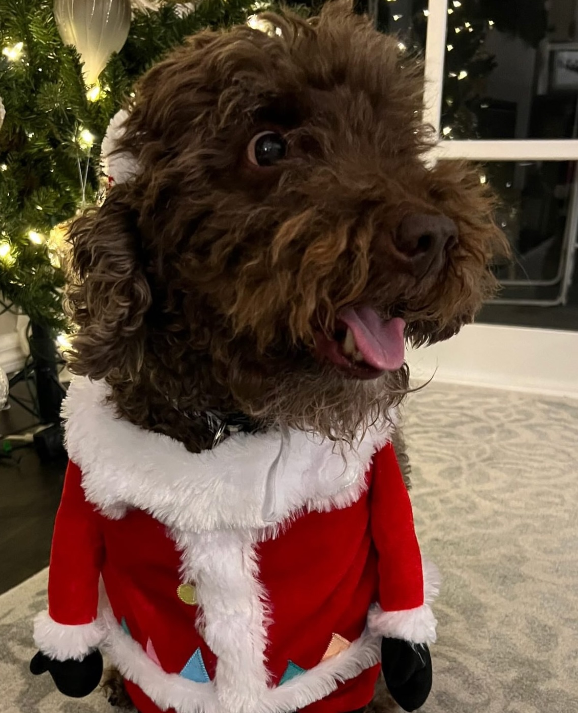
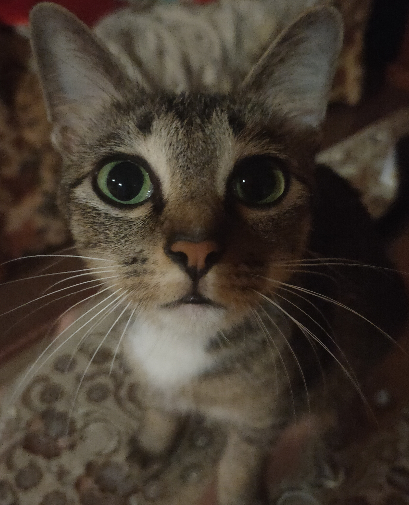
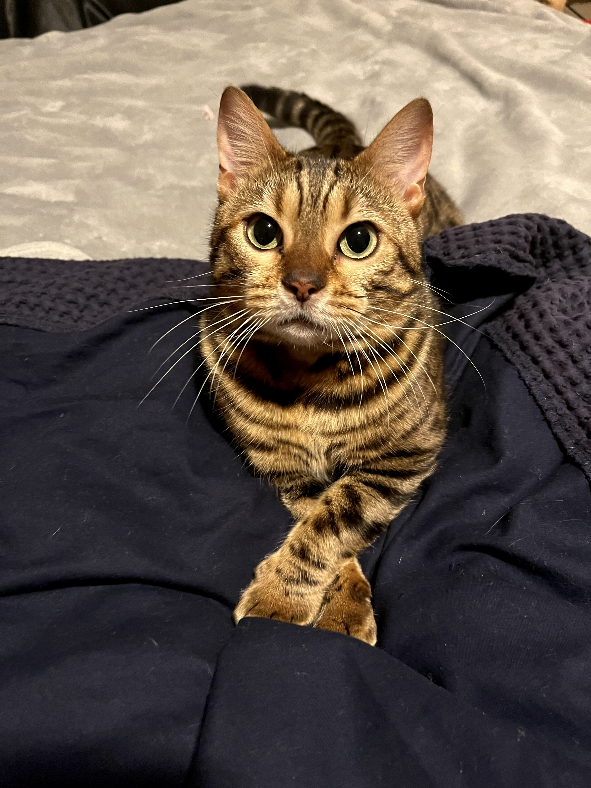
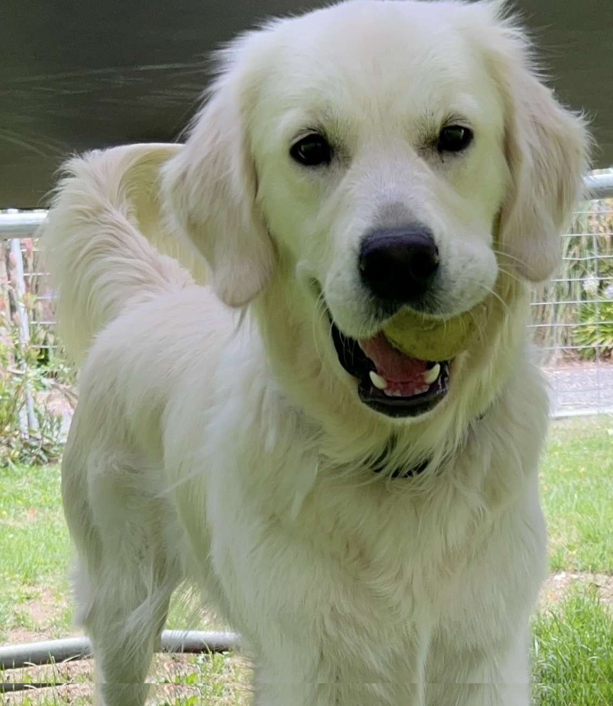

Pop - Doki’s wildest gang member, sitting like he owns the place.Checkers - Checkers’s the boss. Pop’s just here for snacks.

Felix - When Santa needs class, he sends this guy.

Mimi - Sweet on the outside, mafia on the inside.Dessie. She’s not a cat, but don’t tell her that.

Honey—polite paws, criminal mind.Toothless — trained in the art of vanishing.

Wilma—too handsome to be a cat, but accepted anyway.Rascal - Eyes closed, but always judging.